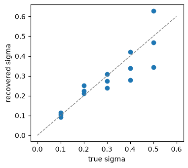

Models#
A model in behav_utils simulates behaviour: given a run of trials it produces responses, and the result is a
session like a loaded one, scored by the task and ready for every statistic. This tutorial builds runs with
make_design, simulates them, writes a small learner, compares the ideal observer with its normative prediction,
and checks that the psychometric fit recovers a known parameter. Fitting models to data is left to projects (see
Concepts).
Designs and simulation#
A design is a run of trials: the stimuli, and which trials carry the laser, abort or get no response. simulate
runs a model on it and returns a SessionData, so one design can be run through several models on identical
stimuli:
import matplotlib.pyplot as plt
import numpy as np
import pandas as pd
from behav_utils import (IdealObserver, PsychometricModel, TrialArrays, compute_psychometric_curve, compute_stats,
filter_trials, make_design, simulate)
from behav_utils.models import normative_pse
from behav_utils.tasks import TruncatedNormal, TwoAFC, Uniform
rng = np.random.default_rng(3)
design = make_design(TwoAFC(), Uniform(), 400, laser_fraction=0.3, abort_rate=0.05, rng=rng)
session = simulate(PsychometricModel(mu=0.1, sigma=0.25), design, rng)
compute_stats(TrialArrays.from_sessions(filter_trials([session])), ['accuracy', 'mu', 'sigma']).round(3)
accuracy 0.85
mu 0.04
sigma 0.31
Name: value, dtype: float64
The estimates come from fewer than 300 laser-off trials, so they scatter around the model’s values; the last section looks at that scatter.
A learner of your own#
TrialwiseModel runs the trial loop, so a learner only says how it chooses (p_choice, the probability of B) and
how it learns (update, called after each completed trial with its choice, the task’s score of it and the truth).
This one answers B when the noisy stimulus is above a criterion. A rewarded choice moves the criterion to make the
same choice more likely, an error moves it the other way, and after every trial the criterion relaxes towards 0.
Extending has the general recipe.
from scipy.stats import norm
from behav_utils.models import TrialwiseModel
class DriftingCriterion(TrialwiseModel):
"""Answers B when the noisy stimulus is above a criterion that follows the outcomes of recent choices."""
def __init__(self, noise=0.2, step=0.1, decay=0.9):
self.noise = noise
self.step = step
self.decay = decay
def reset(self):
self.criterion = 0.0
def p_choice(self, trial):
return float(norm.cdf((trial.stimulus - self.criterion) / self.noise))
def update(self, trial):
if trial.correct is None:
return
towards_repeat = -self.step if trial.choice == 1 else self.step
self.criterion += towards_repeat if trial.correct else -towards_repeat
self.criterion *= self.decay
long_run = make_design(TwoAFC(), Uniform(), 2000, rng=rng)
models = {'learner': DriftingCriterion(), 'fixed criterion': PsychometricModel(sigma=0.2, lapse_low=0, lapse_high=0)}
pd.DataFrame({name: compute_stats(TrialArrays.from_sessions(filter_trials([simulate(model, long_run, rng)])),
['accuracy', 'recency'])
for name, model in models.items()}).round(3)
| learner | fixed criterion | |
|---|---|---|
| accuracy | 0.891 | 0.930 |
| recency | 0.121 | 0.011 |
The learner’s choices follow the previous trial’s category: recency, the difference between P(B) after a B
trial and after an A trial, is clearly positive. It pays for that in accuracy, while a fixed criterion shows no
such pull beyond noise.
The ideal observer#
IdealObserver perceives each stimulus with Gaussian noise and chooses the category with the higher posterior
under its prior. With B stimuli more common, here a normal prior centred at 0.3, it answers B more often and its
point of subjective equality moves towards A. normative_pse predicts where, and the psychometric fit to its
simulated choices should land close by:
prior = TruncatedNormal(mean=0.3, sd=0.4)
observer = IdealObserver(noise=0.25, distribution=prior)
skewed = make_design(TwoAFC(), prior, 4000, rng=rng)
curve = compute_psychometric_curve(TrialArrays.from_sessions(filter_trials([simulate(observer, skewed, rng)])),
n_bootstrap=0)
pd.Series({'fitted PSE': curve.mu, 'normative PSE': normative_pse(prior, noise=0.25)}).round(3)
fitted PSE -0.124
normative PSE -0.117
dtype: float64
For a continuous task the observer reports its posterior mean instead, and normative_slope gives the slope that
implies.
Recovering a parameter#
A descriptive fit should give back the parameters a model was simulated with. Here five values of sigma, three
runs of 500 trials each:
rows = []
for sigma in (0.1, 0.2, 0.3, 0.4, 0.5):
for repeat in range(3):
run = make_design(TwoAFC(), Uniform(), 500, rng=rng)
fitted = compute_psychometric_curve(
TrialArrays.from_sessions(filter_trials([simulate(PsychometricModel(sigma=sigma), run, rng)])),
n_bootstrap=0)
rows.append({'true sigma': sigma, 'recovered sigma': fitted.sigma})
recovery = pd.DataFrame(rows)
fig, ax = plt.subplots(figsize=(4, 3.6))
ax.plot([0, 0.6], [0, 0.6], ls='--', color='grey', lw=1)
ax.scatter(recovery['true sigma'], recovery['recovered sigma'])
ax.set_xlabel('true sigma')
ax.set_ylabel('recovered sigma');

The estimates scatter around the identity line, and more for the shallower curves, which 500 trials pin down less well.
Where to go next#
Extending shows a model written from scratch and a learner.
The API page for models lists every model and helper.